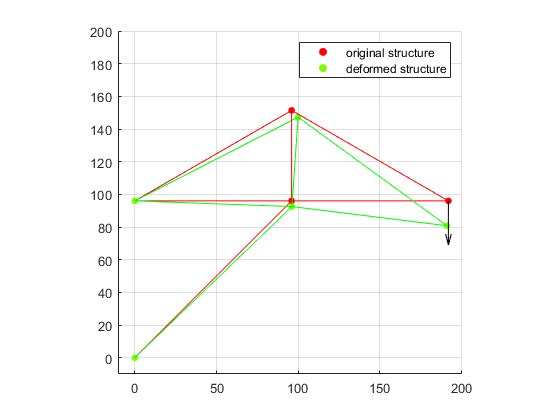

Contents
- Problem Statement
- Connectivity table, node coordinate matricies, and problem setup
- Calculation of element stiffness matrix and population of global stiffness matrix
- Reducing global stiffness matrix
- Solving simultaneous equations for unconstrained displacements
- Post-processing
- Calculate force vector (including reactions)
- Calculate stress in each element
- Calculate strain in each element
- Plot original and deformed structure
Problem Statement

clc
clear all
Connectivity table, node coordinate matricies, and problem setup
connect = [1 3;
2 3;
2 4;
3 4;
3 5;
4 5]; %connectivity table defining 2d trusses
node_coordinates = [0 0;
0 96;
96 96;
96 151.4
192 96]; %coordinate table of node locations
stationary_DOF = [1 2 3 4]; %vector of constrained DOF numbers
F = [0 0 0 0 0 -500]'; %left DOFs 1-4 out since those are unknown reactions
scale = 150; %displacement scale so we can plot the results later
DOF = 2; %degrees of freedom per node
E = 2e6; %modulus of elasticity (Southern Pine)
A = 1.75*3.5; %cross-sectional area of a truss
Calculation of element stiffness matrix and population of global stiffness matrix
num_nodes = size(node_coordinates, 1); k_global = zeros(num_nodes*DOF);%initialization of empty global stiffness matrix T = zeros(size(connect, 1), 4); DOF_ids = zeros(4, size(connect, 1)); for i = 1:size(connect, 1) element_node1 = connect(i, 1); %transforms global node into node numbers relative to element element_node2 = connect(i, 2); %pick x coordinates of truss out of node coordinate matrix x1 = node_coordinates(element_node1, 1); x2 = node_coordinates(element_node2, 1); %pick y coordinates of truss out of node coordinate matrix y1 = node_coordinates(element_node1, 2); y2 = node_coordinates(element_node2, 2); truss_length = sqrt((x2-x1)^2 + (y2-y1)^2); %truss length C = (x2-x1)/truss_length; %cosine of truss defining angle S = (y2-y1)/truss_length; %sine of truss defining angle %DOF of nodes associated with truss DOFaddress = [(element_node1*2)-1 (element_node1*2) (element_node2*2)-1 (element_node2*2)]; k_local = (A*E/truss_length)*[C^2 C*S -C^2 -C*S; C*S S^2 -C*S -S^2; -C^2 -C*S C^2 C*S; -C*S -S^2 C*S S^2]; %local stiffness matrix T(i,:) = E/truss_length*[-C -S C S]; %rotation matrix for solving for stresses later DOF_ids(:,i) = DOFaddress'; %ids of DOFs associated with this truss for i = 1:4 %adds local stiffness matrix to global stiffness matrix for j = 1:4 globalIn1 = DOFaddress(i); globalIn2 = DOFaddress(j); k_global(globalIn1, globalIn2) = k_global(globalIn1, globalIn2)+k_local(i, j); end end end
Reducing global stiffness matrix
dim = num_nodes*2-length(stationary_DOF); k_reduced = zeros(dim); %initialized reduced stiffness matrix DOFfree = ones(1, num_nodes*2); %initialize mask indicating free DOFs %populate mask as appropriate for i = 1:length(stationary_DOF) DOFfree(stationary_DOF) = 0; end a = 1; b = 1; %reduce global stiffness matrix according to mask for i = 1:length(DOFfree) for j = 1:length(DOFfree) if (DOFfree(i) && DOFfree(j)) k_reduced(a,b)=k_global(i,j); if (a == b) U_label(a) = i; end b = b+1; if (b > dim) b = 1; a = a+1; end end end end U_label = U_label'; k_reduced
k_reduced =
1.0e+05 *
3.0032 0.4511 0 0 -1.2760 0
0.4511 2.6623 0 -2.2112 0 0
0 0 1.6582 0 -0.8291 0.4785
0 -2.2112 0 2.7634 0.4785 -0.2761
-1.2760 0 -0.8291 0.4785 2.1051 -0.4785
0 0 0.4785 -0.2761 -0.4785 0.2761
Solving simultaneous equations for unconstrained displacements
U = (inv(k_reduced)*F); U = [0; 0; 0; 0; U]
U =
0
0
0
0
0.0010
-0.0232
0.0265
-0.0277
-0.0057
-0.1016
Post-processing
Calculate force vector (including reactions)
force_vector = k_global*U
force_vector =
1.0e+03 *
1.0000
1.0000
-1.0000
-0.5000
0.0000
-0.0000
-0.0000
-0.0000
0.0000
-0.5000
Calculate stress in each element
%displacements associated with each truss in matrix form truss_displacements = zeros(4, 6); %populate it according the the nodes each truss is connected to for i=1:size(DOF_ids, 1) for j=1:size(DOF_ids, 2) truss_displacements(i, j) = U(DOF_ids(i,j)); end end stress = diag(T*truss_displacements)
stress = -230.8920 21.8080 163.3219 -163.2653 -141.4573 163.3219
Calculate strain in each element
strain = stress/E
strain =
1.0e-03 *
-0.1154
0.0109
0.0817
-0.0816
-0.0707
0.0817
Plot original and deformed structure
U = U(length(stationary_DOF)+1:end) * scale; newNodeCo = node_coordinates; %increment original node coordinates by displacements for i = 1:length(U_label) if (~mod(U_label(i),2)) node = U_label(i)/2; newNodeCo(node,2) = newNodeCo(node,2) + U(i); else node = ceil(U_label(i)/2); newNodeCo(node,1) = newNodeCo(node,1) + U(i); end end dotSize = 25; %prepare plots pbaspect([1 1 1]) xlim([-10, 200]) ylim([-10, 200]) grid() hold on %plot nodes just for fun scatter(node_coordinates(:,1),node_coordinates(:,2),dotSize,[1 0 0],'filled') scatter(newNodeCo(:,1),newNodeCo(:,2),dotSize,[.49 .99 0],'filled') %plot each truss for i = 1:size(connect, 1) element_node1 = connect(i, 1); element_node2 = connect(i, 2); X = [node_coordinates(element_node1,1), node_coordinates(element_node2,1)]; Y = [node_coordinates(element_node1,2), node_coordinates(element_node2,2)]; line(X,Y,'Color', 'red') X = [newNodeCo(element_node1,1), newNodeCo(element_node2,1)]; Y = [newNodeCo(element_node1,2), newNodeCo(element_node2,2)]; line(X,Y,'Color', 'green') end quiver(node_coordinates(end, 1), node_coordinates(end, 2), 0, -30, 'Color', 'k', 'MaxHeadSize', 0.75) legend('original structure', 'deformed structure')